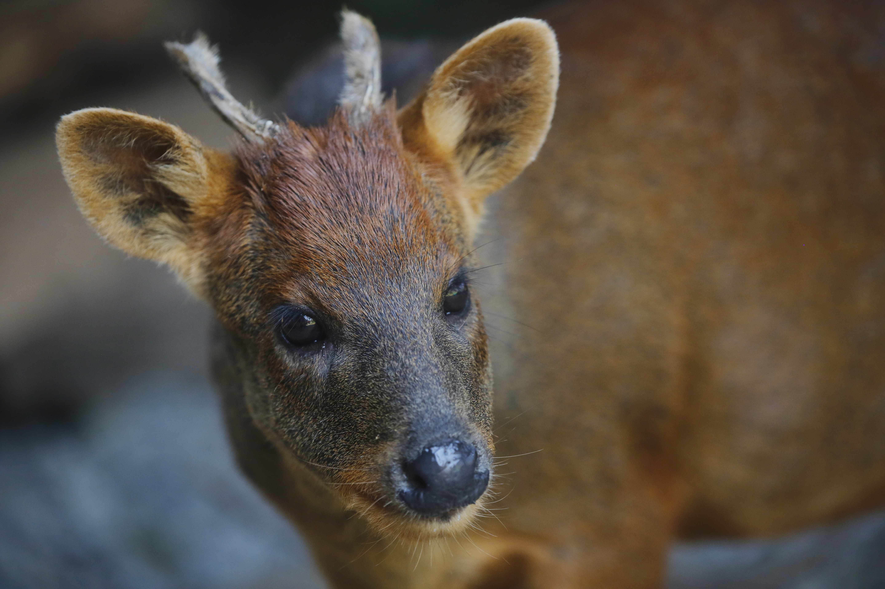
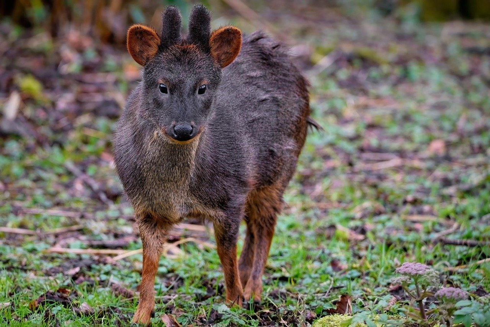

Detalles del Pudú
¿Que es el Pudú?
El Pudú es un animal Solitario y territorial. La epoca de celo ocurre entre los meses de Abril y Mayo, y tras una gestación de aproximadamente 210 dias, la hembra da a luz a una sola cria.
Las crias nacen con manchas blancas en el lomo que desaparecen al cabo de algunas semanas

Alimentación del pudú
El pudú es un animal herbívoro y muy selectivo en su Alimentación. Se alimenta principalmente al amanecer y al atardecer
Su dieta incluye:
- Hojas y brotes tiernos de árboles nativos
- Frutos sílvestres y bayas del bosque
- Hongos y líquenes
- Corteza de árboles jóvenes
- Helechos y musgos
Durante el invierno, cuando el alimento escasea, el pudú puede alimentarse de ramas bajas y corteza de árboles para sobrevivir

Estado de Conservación
Según la IUCN, el pudú del sur es una especie Vulnerable. En Chile está protegida por ley y esta prohibida su caza.
Las principales amenazas son el ataque de perros, atropellos y la pérdida de su habitad natural

Ficha Técnica del pudú
| Caracteristica | Detalle |
| Nombre Cientifico | Pudu puda |
| Habitat | Bosques templados de Chile y Argentina |
| Estado de Conservación | Vulnerable (IUCN) |